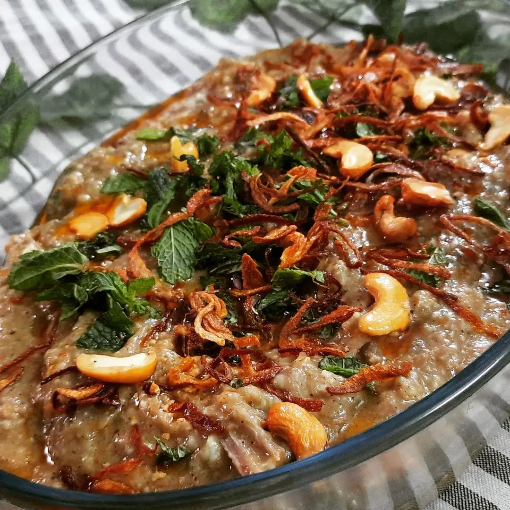

Home
Haleem

Description
Hyderabadi haleem is a type of haleem popular in the Indian city of Hyderabad. Haleem is a stew composed of meat, lentils, and pounded wheat made into a thick paste. It is originally an Arabic dish and was introduced to the Hyderabad State by the Chaush people during the rule of the Nizams (the former rulers of Hyderabad State). Local traditional spices helped a unique Hyderabadi haleem evolve, that became popular among the native Hyderabadis by the 20th century.
Ingredients
- Chicken
- Broken wheat
- Chana dal
- Toor dal
- Masoor dal
- Moong dal
- Urad dal
- Onions
- Ginger-garlic paste
- Green chilies
- Fresh coriander leaves
- Mint leaves
- Lemon juice
- Yogurt
- Ghee
- Oil
- Whole spices (cloves, cardamom, cinnamon, bay leaf)
- Black pepper
- Garam masala
- Turmeric powder
- Red chili powder
- Coriander powder
- Salt
- Saffron
- Fried onions
- Cashews
Steps
- Soak broken wheat and all dals in water for a few hours.
- Cook the meat with ginger-garlic paste, yogurt, spices, and salt until tender.
- Cook the soaked wheat and dals with turmeric and salt until soft and mushy.
- Shred or mash the cooked meat and set aside.
- Blend the wheat-dal mixture to a smooth or slightly coarse paste.
- Heat ghee and oil in a large pot, add whole spices and sauté.
- Add green chilies, mint, and coriander, then the meat and wheat mixture.
- Combine everything and cook on low heat, stirring often to prevent sticking.
- Adjust salt and spices, add water if needed to get a thick, porridge-like consistency.
- Cook for 30–45 minutes, stirring continuously for smooth texture.
- Top with ghee, fried onions, lemon juice, mint, coriander, and cashews.
- Serve hot with naan or as-is.